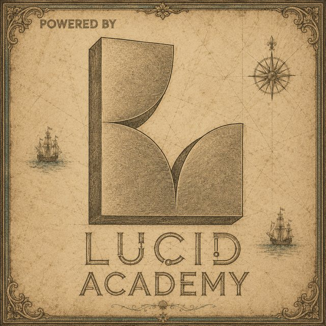

Demo · analiza przygotowana dla Żeglugi SzczecińskiejLucid Academy · wrzesień 2026
Dziennik sezonu · styczeń–sierpień 2026
Liczba turystów w Szczecinie wzrosła o 7,9%
W okresie styczeń–sierpień 2026 roku Szczecin odwiedziło 947,6 tys. turystów, o 69 tys. więcej niż przed rokiem. Najwyższą dynamikę odnotowano w ruchu zagranicznym (+20,6%). Od maja każdy miesiąc zamyka się wynikiem wyższym niż w 2025 roku.
53°25′N · 14°33′E · źródło danych: Selectivv

Demo
Przypływ
Sezon miesiąc po miesiącu
Wykres przedstawia wartości miesięczne dla wybranej grupy turystów i miary. Kolor niebieski oznacza rok 2026, sepia rok 2025. Najwyższe wartości przypadają na sierpień, w którym odbywają się Żagle i trwa szczyt sezonu wakacyjnego.
Grupa
Miara
20262025
Miesięczne dane o noclegach wykazują dużą zmienność (zob. kwestie do weryfikacji). Do porównań zalecamy sumy za cały okres.
RekomendacjaW lipcu i sierpniu 2026 roku liczba turystów była o 15% wyższa niż przed rokiem. Rosnący popyt w szczycie sezonu przemawia za zwiększeniem liczby kursów oraz za analizą możliwości wydłużenia sezonu rejsowego.
Mielizna
Słabszy początek roku, silniejszy sezon letni
Wykresy pokazują zmianę liczby turystów względem analogicznego miesiąca 2025 roku. W okresie styczeń–kwiecień liczba turystów krajowych była niższa o 9,7%, natomiast w okresie maj–sierpień wyższa o 13,5%. Ruch zagraniczny wzrósł w każdym z ośmiu miesięcy.
wzrost r/rspadek r/r
KomunikacjaW komunikacji zewnętrznej rekomendujemy oparcie przekazu na wynikach sezonu letniego i dynamice ruchu zagranicznego. Przyczynę spadku w pierwszych miesiącach roku należy wcześniej wyjaśnić z dostawcą danych, ponieważ może on wynikać ze zmiany metodologii.
Pod obcą banderą
Turyści zagraniczni odpowiadają za 37% wzrostu
Turyści zagraniczni stanowią 16% ogółu turystów, a zarazem odpowiadają za 25,6 tys. z 69,2 tys. przyrostu liczby turystów. W sierpniu ich udział wzrósł do 24%.
Udział grup w ruchu i we wzroście
I–VIII 2026; wzrost liczony względem I–VIII 2025
krajowiregionalnizagraniczni
krajowi+37 218+5,5% r/r
regionalni+6330+8,6% r/r
zagraniczni+25 604+20,6% r/r
Udział turystów zagranicznych w miesiącu
odsetek wszystkich turystów w danym miesiącu
20262025
Kolejny etapObecne zestawienie nie obejmuje krajów pochodzenia. Dane te umożliwią precyzyjne kierowanie kampanii promocyjnych i dobór języków obsługi na statkach.
Efekt Żagli
Na sierpień przypada 29% turystów z okresu styczeń–sierpień
Wykres przedstawia stosunek liczby turystów w sierpniu do liczby lipcowej. W grupie zagranicznej wynosi on 3,3 zarówno w 2025, jak i w 2026 roku. Ponieważ w sierpniu nakładają się Żagle i szczyt wakacyjny, oddzielenie wpływu wydarzenia wymaga danych dziennych.
Sierpień względem lipca
iloraz liczby turystów w sierpniu i w lipcu
20262025
Żagle 2026 · 14–16 sierpnia
dane organizatora, spoza zestawienia Selectivv
ponad 450 tys.uczestników, o 10,5% więcej niż w 2025
96 263gości z zagranicy, głównie z Niemiec, Czech i Wielkiej Brytanii
ok. 95%obłożenia hoteli w piątek i sobotę
PropozycjaNa podstawie danych dziennych Lucid Academy oszacuje liczbę turystów i noclegów generowanych przez Żagle ponad typowy poziom sierpnia. Wynik może stanowić podstawę planowania budżetu kolejnych edycji.
Długość postoju
Średnio 1,8 nocy na przyjazd
Średnia długość pobytu pozostała niemal bez zmian. Wyjątek stanowią turyści zagraniczni, których pobyt skrócił się z 1,83 do 1,71 nocy.
Noclegi na jeden przyjazd, I–VIII
suma noclegów podzielona przez sumę przyjazdów
20252026
RekomendacjaWydłużeniu pobytu gości zagranicznych mogłaby sprzyjać oferta pakietowa łącząca rejs ze Szczecińską Kartą Turystyczną.
Wynik roczny
Symulacja wyniku za cały 2026 rok
Do końca sierpnia 2026 roku Szczecin odwiedziło 947,6 tys. turystów, co odpowiada 73% wyniku całego 2025 roku (ok. 1,3 mln według komunikatu miasta). Symulator pozwala przyjąć założenie o dynamice ruchu w okresie wrzesień–grudzień i ocenić jego wpływ na wynik roczny.
−20%+25%
Szacowany wynik 2026 roku1,40 mln
I–VIII 2026IX–XII 2026 według założeniaI–VIII 2025IX–XII 2025
Wartości szacunkowe. Wynik za wrzesień–grudzień 2025 roku (ok. 422 tys.) obliczono jako różnicę między zaokrąglonym wynikiem rocznym podanym przez miasto a sumą za styczeń–sierpień z zestawienia Selectivv. Założenie o dynamice dotyczy łącznej liczby turystów w okresie wrzesień–grudzień.
Ostrzeżenia nawigacyjne
Kwestie do weryfikacji przed publikacją
Przed wykorzystaniem danych w komunikacji zewnętrznej rekomendujemy wyjaśnienie z dostawcą danych pięciu kwestii.
Komunikat 1
Luty 2025: prawdopodobny błąd eksportu
Liczba przyjazdów jest identyczna z liczbą odwiedzających we wszystkich trzech grupach. W pozostałych miesiącach przyjazdów jest o 0,4–7,7% więcej niż odwiedzających.
Komunikat 2
Równomierny spadek ruchu krajowego w I–IV 2026
Spadek wynosi od 8,9% do 11,4% w każdym z czterech miesięcy, po czym od maja następuje wzrost o 11–16%. Należy potwierdzić, czy w tym okresie nie zmieniła się metodologia lub próba badawcza.
Komunikat 3
Duża zmienność miesięcznych danych o noclegach
Liczba noclegów na jeden przyjazd waha się od 1,30 do 2,67, podczas gdy w ujęciu całego okresu pozostaje stabilna (ok. 1,84). Każdy punkt oznacza jeden miesiąc. W komunikacji zalecamy posługiwanie się sumami za okres.
miesiąc 2025miesiąc 2026
Komunikat 4
Suma miesięczna nie odpowiada liczbie osób
Osoba obecna w Szczecinie w maju i w sierpniu jest liczona dwukrotnie. Miasto stosowało tę samą metodę w 2025 roku, dlatego porównanie rok do roku jest spójne. Określenie „unikalni turyści” nie jest jednak w tym kontekście precyzyjne.
Komunikat 5
Trzy wskaźniki opisujące różne grupy
W publikowanych danych funkcjonują trzy wskaźniki: turyści (niniejsze zestawienie), odwiedzający łącznie z jednodniowymi (4,7 mln w okresie I–X 2025) oraz uczestnicy wydarzeń (96 tys. gości zagranicznych podczas Żagli 2026). Każdy z nich wymaga jednoznacznego opisu.
Niezbadane wody
Zakres pełnej analizy Lucid Academy
Poniżej przedstawiamy analizy, które Lucid Academy przygotuje dla Żeglugi Szczecińskiej po udostępnieniu szerszego zakresu danych. Grafiki mają charakter poglądowy i nie zawierają rzeczywistych wartości. Przy każdej analizie wskazano wymagane źródła danych.
Oferta
Proponowany zakres współpracy
Poniższe moduły mogą być realizowane łącznie lub niezależnie.
Pakiet komunikacyjny „Sezon 2026”
Podsumowanie sezonu uzupełnione o dane za wrzesień i wyniki ankiet Szczecińskiej Karty Turystycznej, przygotowane w formie interaktywnej strony, infografik do mediów społecznościowych i materiałów prasowych.
Raport „Efekt Żagli”
Ocena wpływu wydarzenia na ruch turystyczny, liczbę noclegów i obłożenie hoteli, stanowiąca podstawę planowania kolejnych edycji.
Barometr turystyczny
Panel wskaźników aktualizowany co miesiąc przez Lucid Academy na podstawie danych Selectivv oraz danych Żeglugi Szczecińskiej dotyczących rejsów, mariny i Centrum Informacji Turystycznej.
Analiza ankiet z wykorzystaniem AI
Opracowanie odpowiedzi otwartych w wielu językach wraz z kategoryzacją tematyczną, oceną poziomu zadowolenia i rekomendacjami.
Chętnie przedstawimy szczegóły współpracy. Pełną analizę przygotujemy po udostępnieniu danych.
Piotr Jarczykprezes Lucid Academypiotr.jarczyk.ai@gmail.com